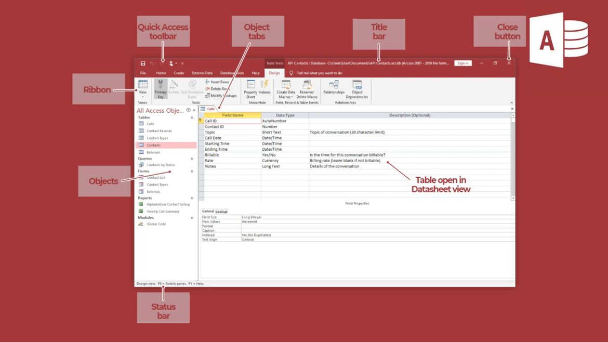

Microsoft Access Complete Beginner Guide
Microsoft Access is a database management system used to store, organize, and manage large amounts of information. It helps users create structured databases that allow data to be searched, filtered, and analyzed easily. Organizations use Access for managing records such as customers, employees, inventory, and business data.
1. Introduction to Databases
A database is a collection of related information stored in an organized way. Examples of databases include:
- Student records
- Employee information
- Product inventories
- Customer databases
2. Understanding the Access Interface

- Title Bar – shows the database name
- Ribbon – contains commands and tools
- Navigation Pane – displays database objects
- Workspace – where database objects are edited
- Status Bar – shows database information
3. Creating a New Database
This is little bit different from others but same steps, see the guides below:
- Open Microsoft Access
- Click File
- Select New
- Choose Blank Database
- Enter a database name
- Click Create
4. Tables
Tables are the main place where data is stored in a database.
A table organizes data into rows and columns.
But this isn't the same as Excel, it's little bit tricky, for more guides, meet Administrator on WhatsApp: Message Administrator here
Let's proceed, so see the notes below.
- Rows represent records
- Columns represent fields
5. Fields and Data Types
Fields define the type of data stored in a column. Common data types include:
- Short Text
- Number
- Date and Time
- Currency
- Yes/No
6. Forms
Forms provide an easy way for users to enter and view data in a database. Forms make data entry more user-friendly compared to tables.
7. Queries
Queries are used to search and retrieve specific data from a database. They allow users to filter records based on conditions.
Example:- Find all students older than 18
- Show products that cost more than $50
8. Reports
Reports are used to present database information in a professional and printable format. They are commonly used for summaries and business reports.
9. Relationships
Relationships connect tables together using common fields. For example:
- Student Table
- Course Table
These tables can be connected using a student ID or course ID.
10. Saving and Managing Databases
- Click File
- Select Save
- Choose database location
It is important to regularly save and back up databases to avoid losing important information.
Create your fiverr account now and start making something with your skills Create my Account.